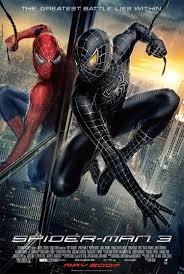
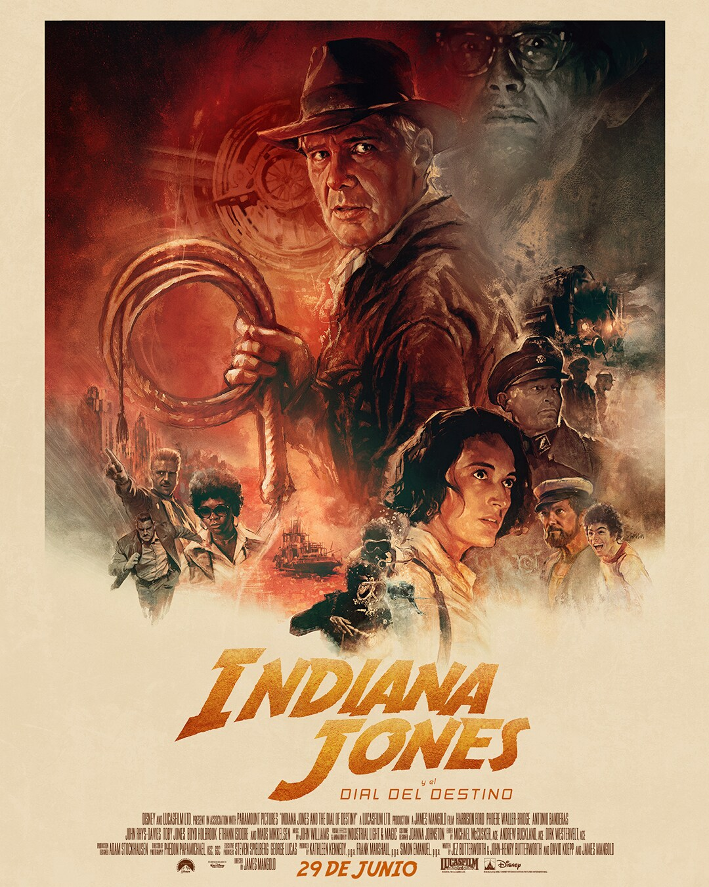
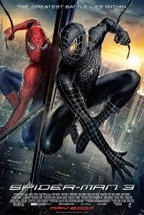
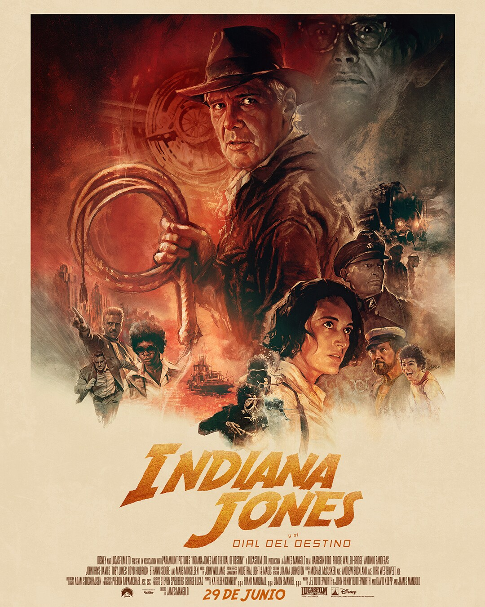
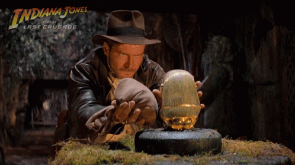
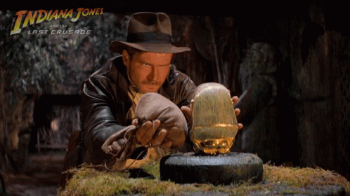

 



Biografia de Geronimo Benavides
Introduccion:
Gerónimo Benavides (Tolosa, La Plata, 11 de abril de 1989), más conocido como Momo, es un youtuber y streamer Italo-argentino, cuenta con más de 1.000.000 de suscriptores en su canal de YouTube, 1.000.000 de seguidores en su canal de Twitch y 100 mil seguidores en su canal de Kick.
Biografia:
Momo nació en Tolosa en 1989 en la casa de sus abuelos. De chico soñaba con ser futbolista. Dedicaba todas sus horas libres a jugar a la pelota en el club del barrio donde se crió. A pesar de estudiar en la misma escuela que el doctor René Favaloro, no fue buen alumno. tenia mala conducta y lo echaban de los colegios. para los 16 años empezo a trabajar en diferentes rubros. Cuando terminó el secundario, momo estudió un año en psicologia y derecho, en mismo tiempo en la Universidad de La Plata.
Inicios como Streamer:
En 2013 empezó como streamer, primero con transmisiones que veían apenas algunos de sus amigos aunque después fueron sumando visitas y seguidores.
Polémicas
Baneo masivo de usuarios:
Momo es conocido por banear a muchos usuarios en mucho de sus directos (mayormente usuarios que lo molestan siempre) debido a eso momo se termina enojando y les dice te vas baneado seguido de un insulto. Gracias a eso surgieron memes como por ejemplo cuando baneo a un usuario llamado Lcasta07 el cual termino siendo un meme en la comunidad de habla hispana.
La velada del año 2:
-Momo subió al ring acompañado de Duki, quien brindó un show en la previa y lo escoltó hasta el cuadrilátero cantando, y no bien puso un pie en el escenario quedaron expuestas algunas cuestiones: para empezar, su rival le sacaba varios centímetros de altura, algo que le permitió tomar ventaja durante todo el enfrentamiento.
-Desde el primer asalto, ViruZz aprovechó su longitud de brazos para conectar varios jab de izquierda, siempre a la distancia del argentino. Momo, en cambio, buscaba escabullirse por debajo de los brazos de su adversario para lastimarlo de cerca, más rápido y con mayor potencia. De cualquier manera, Benavidez no consiguió superarlo en el arranque.
-En el segundo round, la tendencia no cambió demasiado pese al uppercut que Momo logró conectar segundos después del comienzo. El español, por su parte, se afianzó aún más en el ring y golpeó al argentino con tres cross al hilo: dos de izquierda, uno de derecha. Esos tres golpes provocaron los primeros cortes en la nariz del fan de Platense y, por eso mismo, resultarían determinantes minutos después.
-En el tercer y último asalto, ViruZz tomó nuevamente la iniciativa y todo indicaba que se llevaría el triunfo sin mayores sobresaltos. Pero cerca del final, todo cambió: Momo logró conectar varios golpes consecutivos y tuvo a su rival al borde del nocaut. Sin embargo, cada vez que el representante de la celeste y blanca aventajaba al español, el árbitro se metía en el medio y cortaba el avance, en algunos casos, de forma alevosa.